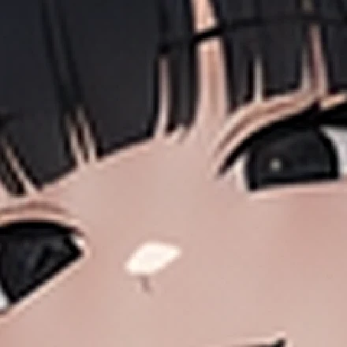
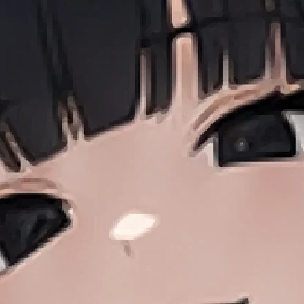

도한나 얼빡 v2 — 운영자 기준 예시에 맞춘 재재단
운영자 260805 후속: 기준 예시 이미지 첨부 + "다시 원본에서 저부분만 고화질로 재단". v1(361차)이 얼굴만 남기고 정수리를 잘랐던 것을, 예시대로 머리 전체가 들어오는 프레이밍으로 다시 잘랐다. 원본은 그대로 ilzin_sheetE_p3.png PALM 칸 — 생성 0·과금 0.
① 기준 예시 ↔ v1 ↔ v2
기준운영자 첨부
정수리부터 턱·깃까지 머리 전체 · 오른쪽에 간판 초록 띠가 살짝.
v1361차 · 배경 0 우선

「배경 안 나오게」를 최우선으로 잡아 정수리를 잘랐다 — 예시보다 한 단계 더 조인 프레이밍.
v2채택 — 예시 정합

머리 전체 + 깃 살짝 + 오른쪽 초록 띠 — 예시와 같은 결. 얼굴은 가로 정중앙.
② 확대 화질 — 같은 박스, 확대 방식만 다르게
lanczos일반 확대(v1이 쓴 방식)

선이 번진다 — 속눈썹·머리끝이 뭉개져 회색 띠가 된다.
xbr ×4채택 — 셀 애니 전용 확대

평평한 셀 그림의 선을 선으로 보존한다(ffmpeg xbr = 도트·애니 전용 보간). 같은 원본에서 선명도만 올라간다.
정직 고지: 확대 방식으로 얻는 건 선명함이지 없던 디테일이 아니다. 원본 얼굴 박스는 150px이고 그게 이 그림의 진짜 해상도다 — 첨부한 기준 예시(997×1071)도 같은 원본을 늘린 것이라 확대해 보면 같은 뭉개짐이 나온다(실측 대조함). 진짜 고해상도가 필요하면 얼빡 1장 재생성(유료 dispatch · 이 재단본을 레퍼런스로 첨부하는 edits 경로 = 얼굴 유지) 뿐이다.
③ 실사용 크기 — 앱이 실제로 그리는 지름
④ 재단 수치
| 항목 | v1(361차) | v2(채택) |
|---|---|---|
| 재단 박스 | 100×100 @ 시트 (137, 843) | 150×150 @ 시트 (112, 792) |
| 프레이밍 | 얼굴만(정수리 잘림) · 배경 0 | 머리 전체 + 깃 살짝 · 배경 = 예시와 같은 정도 |
| 확대 | scale lanczos + unsharp (5.1배) | xbr=n=4 → scale lanczos (3.4배) |
| 산출 | webp q82 · 11.6KB | webp q88 · 20.8KB |
배선 변경 0 — roster.json avatar 경로·media.json 무접촉(파일만 교체) · 파일명 face 규약 유지 = 얼빡 배경 게이트 프사 0.